C# and Loops
We've produced a video to go with this lesson. It's recommended that you read the text below as well, though. The video is here:
Loops are an important part of any programming language, and C# is no different. A loop is a way to execute a piece of code repeatedly. The idea is that you go round and round until an end condition is met. Only then is the loop broken. As an example, suppose you want to add up the numbers one to ten. You could do it like this:
int answer;
answer = 1 + 2 + 3 + 4 + 5 + 6 + 7 + 8 + 9 + 10;
And this would be OK if you only had 10 numbers. But suppose you had a thousand numbers, or ten thousand? You're certainly not going to want to type them all out! Instead, you use a loop to repeatedly add the numbers.
For Loops in C#
The first type of loop we'll explore is called a for loop. Other types are do loops and while loops, which you'll meet shortly. But the for loop is the most common type of loop you'll need. Let's use one to add up the numbers 1 to 100.
Start a new project by clicking File > New Project from the menu bars at the top of Visual Studio. Now add a button to the new form. Double click the button to get at the code. To quickly add a code stub for a loop, right click anywhere between the curly brackets of the button code. From the menu that appears, click on Insert Snippet:
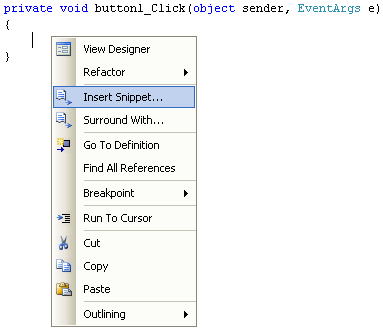
When you click on Insert Snippet, you'll see a list of items:
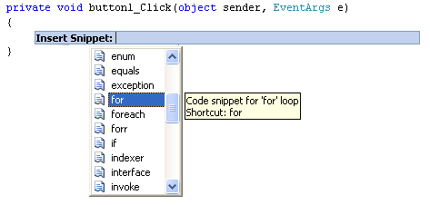
Scroll down and double click on for. Some code is added for you:
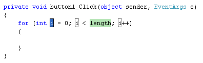
It all looks a bit complicated, so we'll go through it. Here's the for loop without anything between the round brackets:
for ( )
{
}
So you start with the word for, followed by a pair of round brackets. What you are doing between the round brackets is telling C# how many times you want to go round the loop. After the round brackets, you type a pair of curly brackets. The code that you want to execute repeatedly goes between the curly brackets.
The default round-bracket code that C# inserts for you is this:
int i = 0; i < length; i++
There's three parts to the round-bracket code:
- Which number do you want to start at?
- How many times do you want to go round and round?
- How do you want to update each time round the loop?
Note that each of the three parts is separated by a semi-colon. Here's the first part:
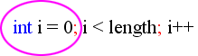
And here's the second part:
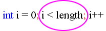
And here's the third part:
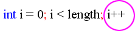
Number 1 on the list above (Which number do you want to start at?) is this:
int i = 0;
What the default code is doing is setting up an integer variable called i (a popular name for loop variables.) It is then assigning a value of 0 to the i variable. It will use the value in i as the starting value of the loop. You can set up your starting variable outside the code, if you prefer. Like this:
int i
for (i = 0; i < length; i++)
{
}
So the variable called i is now set up outside the loop. We then just need to assign a value to the variable for the first part of the loop.
Number 2 on the list above (How many times do you want to go round and round?) was this:
i < length;
This, if you remember your Conditional Logic from the previous section, says "i is less than length". But length is not a keyword. So you need to either set up a variable called length, or replace the word length with a number. So either this:
for (int i = 0; i < 101; i++)
Or this:
int length = 101;
for (int i = 0; i < length; i++)
{
}
In the first example, we've just typed the i < 101. In the second example, we've set up a variable called length, and stored 101 in it. We're then just comparing one variable to another, and checking that i is less than length:
i < length;
If i is less than length, then the end condition has NOT been met and C# will keep looping. In other words, "Keep going round and round while i is less than length."
But you don't need to call the variable length. It's just a variable name, so you can come up with your own. For example:
int endNumber = 101;
for (int i = 0; i < endNumber; i++)
{
}
Here, we've called the variable endNumber instead of length. The second part now says "Keep looping while i is less than endNumber".
Number 3 on the list above (How do you want to update each time round the loop? ) was this:
i++
This final part of a for loop is called the Update Expression. For the first two parts, you set a start value, and an end value for the loop. But C# doesn't know how to get from one number to the other. You have to tell it how to get there. By typing i++, you are adding 1 to the value inside of i each time round the loop. (called incrementing the variable). This:
variable_name++
is a shorthand way of saying this:
variable_name = variable_name + 1
All you are doing is adding 1 to whatever is already inside of the variable name. Since you're in a loop, C# will keep adding 1 to the value of i each time round the loop. It only stops adding 1 to i when the end condition has been reached (i is no longer less than length).
So to recap, you need a start value for the loop, how many times you want to go round and round, and how to get from one number to the other.
So your three parts are these:
for (Start_Value; End_Value; Update_Expression)
OK, time to put the theory into practice. Type the following for your button code:
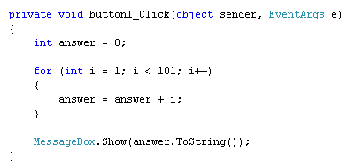
The actual code for the loop, the code that goes inside of the curly brackets, is this:
answer = answer + i;
This is probably the trickiest part of loops - knowing what to put for your code! Just remember what you're trying to do: force C# to execute a piece of code a set number of times. We want to add up the numbers 1 to 100, and are using a variable called answer to store the answer to the addition. Because the value in i is increasing by one each time round the loop, we can use this value in the addition. Here are the values the first time round the loop:
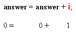
The second time round the loop, the figures are these:
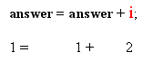
The third time round the loop:
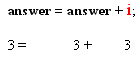
And the fourth:
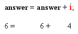
Notice how the value of i increases by one each time round the loop. If you first do the addition after the equals sign, the above will make more sense! (As an exercise, what is the value of answer the fifth time round the loop?)
Run your programme, and click the button. The message box should display an answer of 5050.
In the next part, we'll take a closer look at loop start values and loop end values.